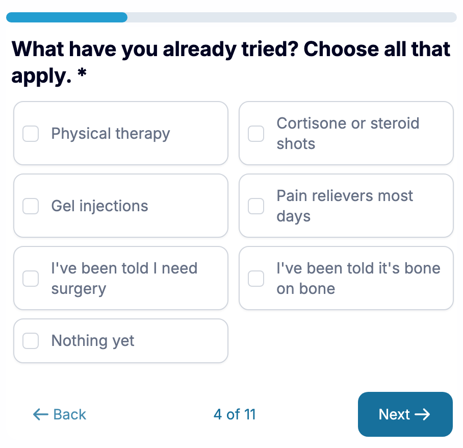
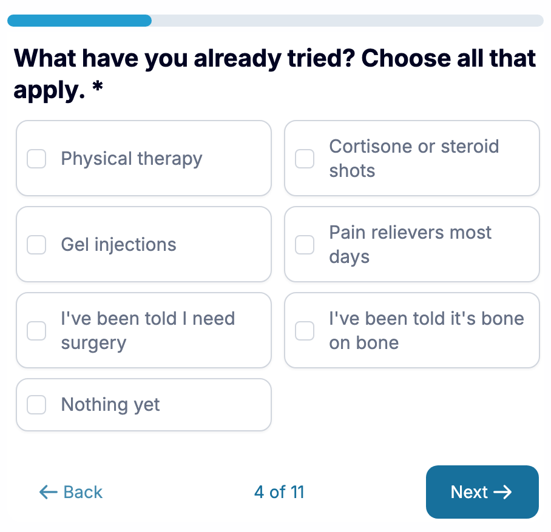

Knee and shoulder surgery · Simsbury, CT
Told you need knee or shoulder surgery?
Get the best care, not just what insurance will cover.
See Dr. Connor Ziegler, a Steadman-trained orthopedic surgeon, as soon as this week, with your recovery planned before surgery day. You get one flat price up front, with no deductibles or insurance claims.
See Dr. Connor Ziegler, a Steadman-trained orthopedic surgeon, as soon as this week, with your recovery planned before surgery day. You get one flat price up front, with no deductibles or insurance claims.
See if Dr. Ziegler can help
Complete 11 quick steps to find out.

- Board-certified orthopedic surgeon, Steadman Clinic fellowship
- Thousands of surgeries performed
- 4.9 stars from 400+ Google reviews
- Self-pay, one flat price up front
The insurance route to surgery usually goes like this.
- Weeks to get an appointment, then more weeks to get a surgery date.
- A short visit, with most of it spent with someone other than the surgeon.
- A deductible, coinsurance and bills you didn’t see coming.
- Calls back and forth with the insurance company about what’s covered.
- A recovery plan that amounts to a printed handout.
- No clear picture of what week six should feel like.
Insurance decides what it will pay for. Dr. Ziegler decides what your knee or shoulder needs, and you know the price before you commit.
What surgery with Dr. Ziegler looks like.
You get a flat price up front, and Dr. Ziegler’s office handles everything from your first exam to your last follow-up: the surgery center, getting you ready beforehand and your recovery afterward.
He operates on knees and shoulders, including rotator cuff and labral repairs, ACL reconstruction, and meniscus and cartilage procedures.
- You see Dr. Ziegler himself at your evaluation and follow-up visits.
- Same-week appointments when the schedule allows.
- Your recovery is planned before surgery day, starting with getting your body ready.
- Regenerative treatment can be added to your recovery when it fits.
How it works
- 01
A free call with Dr. Ziegler’s team
Fifteen minutes by phone, so you know whether an evaluation makes sense before you drive to Simsbury.
- 02
Your evaluation in Simsbury
About an hour with Dr. Ziegler. He examines the joint, goes over your MRI or x-rays with you in plain language and tells you whether surgery is the right call now, later or not at all.
- 03
Your plan and price
If surgery is right for you, you get the surgical plan and the recovery plan around it, with a flat price up front.
4.9 stars from 400+ Google reviews
What patients say
Patients mention the time he spends with them, and how the recovery went.
I’ve had four previous knee surgeries before the one he did, his was much more extensive, and recovery pain was way less.
I had one knee operated on by him and just scheduled my other knee. I’ve never experienced such an amazing surgeon, and at 74, I’ve had a few!
They took the time to walk me through the entire process, explaining every step in detail. I am happy to say that I have fully recovered, an especially challenging process at 53 years old.
Dr. Ziegler spent almost two hours walking me through answers to all my detailed questions regarding my knee arthritis. Not something I was accustomed to.
To be able to have him meet quickly and spend a good amount of time is actually more cost effective than going the traditional route for ortho services.
Dr Ziegler actually spent over an hour with me. Other doctors rush you through an appointment in 10 or 15 minutes.
Individual results vary. These reviews describe each patient’s own experience and are not a prediction of anyone else’s result.
See if Dr. Ziegler can help
If you book a call, his team will already have your answers, so you won’t have to repeat yourself.

What happens on your call with Dr. Ziegler’s team
- It’s a free 15-minute phone call with Dr. Ziegler’s team.
- Tell them what you’ve been told, what you’ve tried and what you want to get back to.
- They’ll explain how surgery and recovery work at Vitality and what the evaluation involves.
- If an evaluation makes sense, they’ll book it with you on the call. If it doesn’t, they’ll tell you.

Meet Dr. Connor Ziegler
Dr. Ziegler is a board-certified orthopedic surgeon. He did his sports medicine fellowship at The Steadman Clinic in Vail and has performed thousands of surgeries.
He has also published research on using biologic treatments alongside surgery, including in rotator cuff repair, so he knows when they’re worth adding to a recovery. Because he does surgery and non-surgical treatment, his recommendation follows what your joint needs, “not just the treatment we happen to sell,” in his words.
- MD, University of Minnesota · residency, UConn
- Consulting surgeon for the Springfield Thunderbirds pro hockey team
- 20 peer-reviewed studies
Surgery with Dr. Ziegler isn’t the right fit for everyone.
- You want your insurance to pay for surgery.Dr. Ziegler doesn’t bill insurance. His care is self-pay, at a flat price.
- You’ve been told you need a joint replacement.Dr. Ziegler doesn’t replace joints. He can tell you whether non-surgical treatment is worth trying first.
- You want a surgery date without an exam.Every plan starts with an evaluation.
- You’re not planning to decide anything in the next few months.Come back when you are.
Questions people ask before they book
Does Dr. Ziegler take insurance?
No. All of his care is self-pay, surgery included. Even when insurance covers an operation, the costs add up: deductibles, coinsurance, physical therapy visits and time on the phone over claims. With Dr. Ziegler you get a flat price up front, and his office handles everything.
What does the flat price include?
Dr. Ziegler gives you a flat price for your surgery and your recovery plan before you commit to anything. What’s in it depends on your procedure and your plan, and he goes through it with you at your evaluation.
Which surgeries does he perform?
Knee and shoulder procedures, including rotator cuff repair, labral repair, shoulder arthroscopy, ACL reconstruction, meniscus surgery and cartilage procedures. He doesn’t perform joint replacements.
How soon can I be seen?
When the schedule allows, you can be seen the same week. Dr. Ziegler sets your surgery date with you at your evaluation.
What does the recovery plan include?
It’s built around your procedure. It can include strength and motion work before surgery, hyperbaric oxygen, laser and red light therapy, nutrition guidance, regenerative treatment where it fits, and follow-up visits with Dr. Ziegler.
Can I come for a second opinion?
Yes. Bring what the other surgeon told you. Dr. Ziegler will examine you, go over your imaging and tell you what he’d do, even if that means waiting or trying non-surgical care first.
Do I need an MRI first?
No. If you have one, bring the report to your evaluation. If you need imaging, Dr. Ziegler will tell you.
Get a surgeon’s answer, and a price, before you decide.
Answer a few short questions. If it looks like a fit, you’ll pick a time for a free 15-minute call with Dr. Ziegler’s team.
See if Dr. Ziegler can help